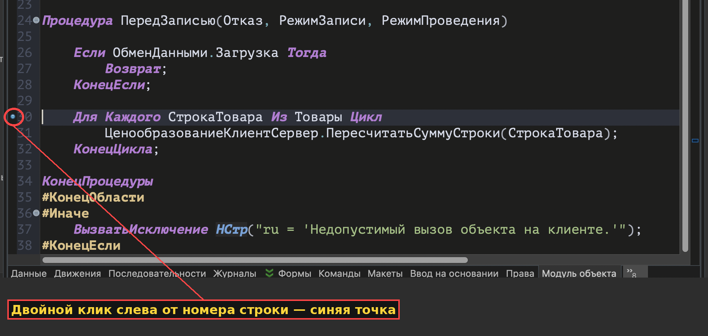
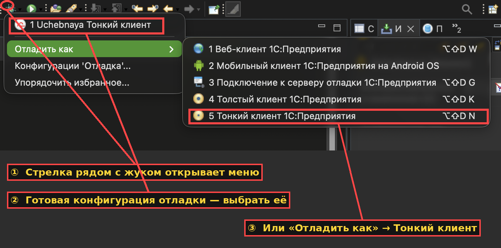
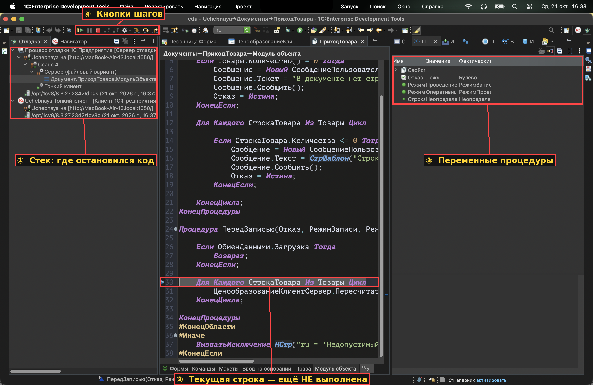
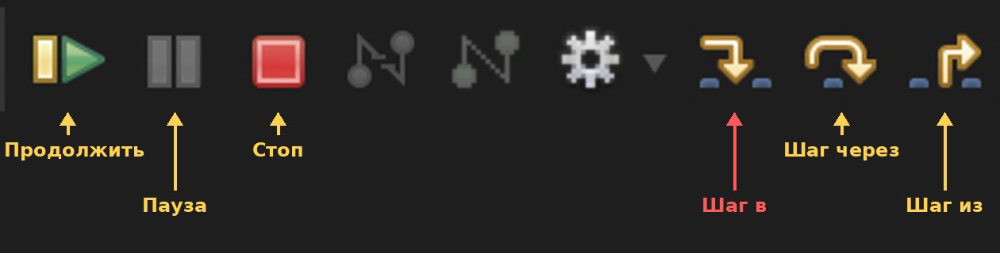
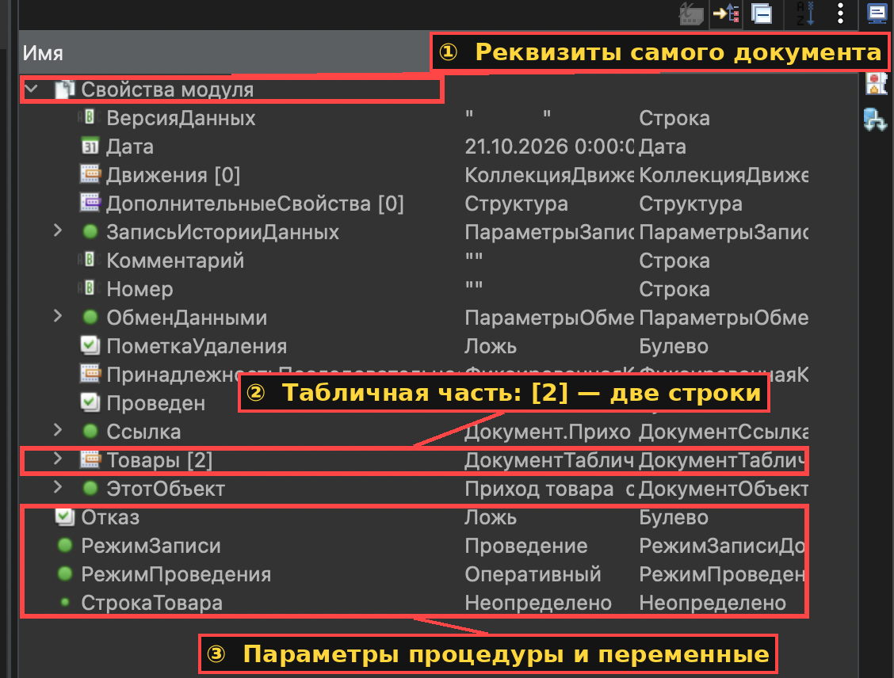
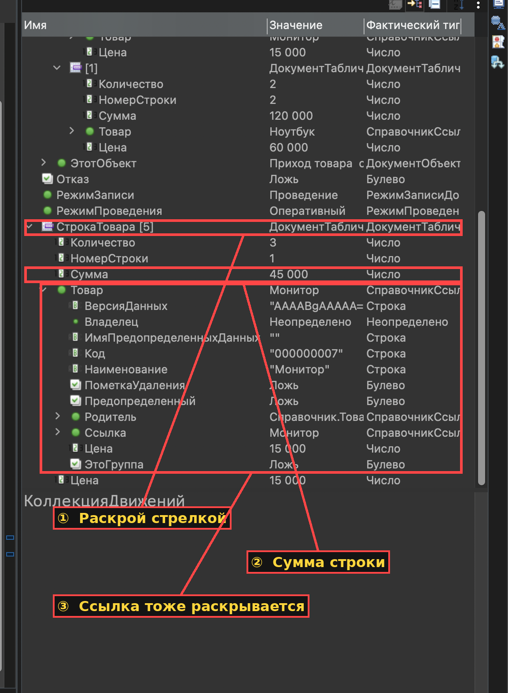
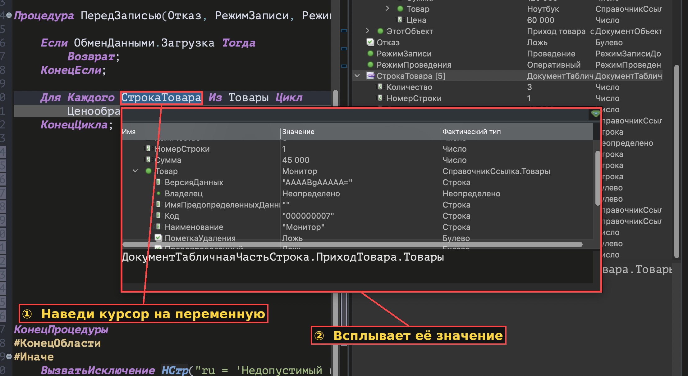
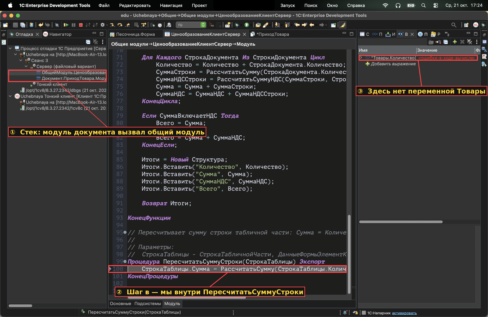
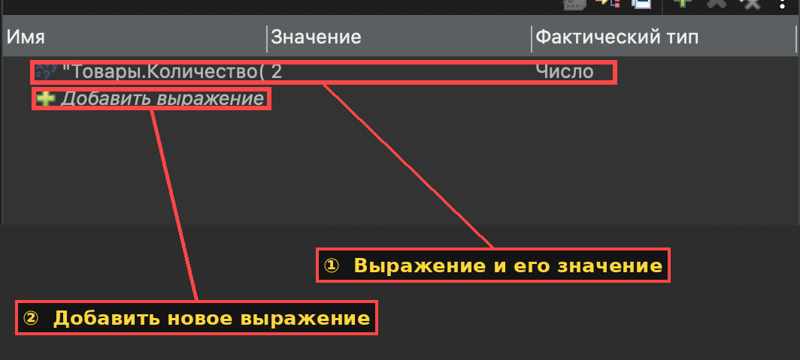
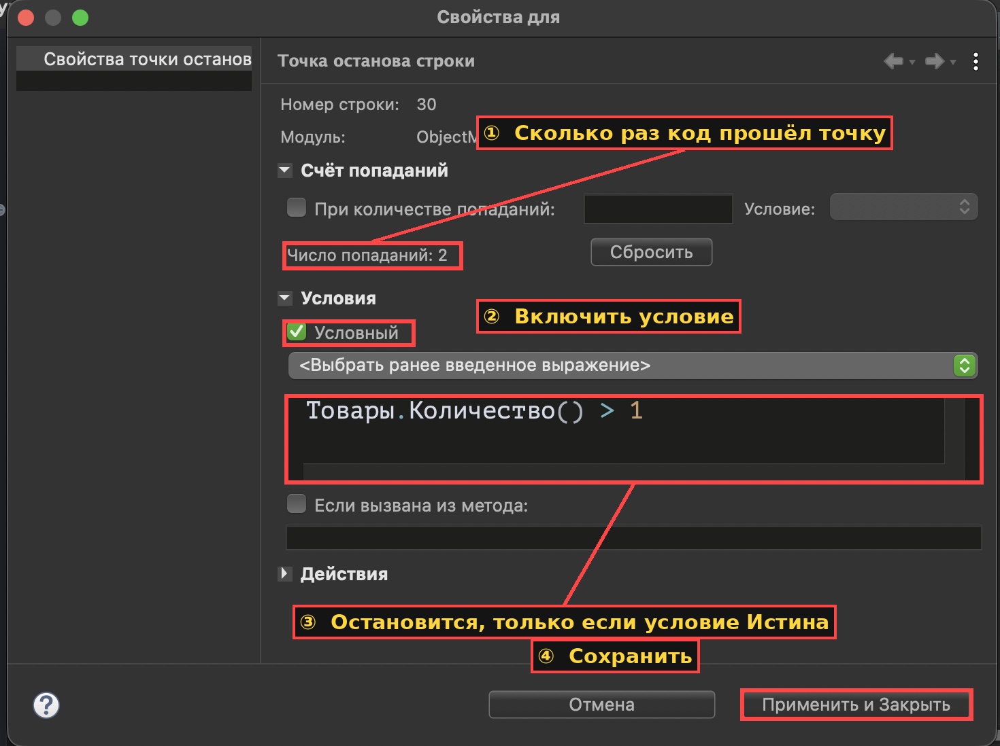

Глава 2 · Задача 5. Отладчик и обработка ошибок
Цель: уметь остановить код в нужном месте и посмотреть значения переменных; понимать, где
Попытка ... Исключениепомогает, а где прячет ошибку. Время: 1 день. Застрял больше 30 минут — пиши. Git: веткаfeature/ch2-t5-otladka-i-oshibki. Картинки — в папкеГлава2_Задача5_картинки. Места для них отмечены блоками «▶ ВСТАВИТЬ СКРИН» с именем файла.
1. Что это и зачем
Отладчик
Что это. Режим, в котором код можно поставить на паузу на нужной строке и посмотреть, что лежит в каждой переменной. Дальше идёшь по коду строка за строкой и видишь, как меняются значения.
Зачем. До сих пор ты искал ошибки через Вывести: добавил вывод, запустил, посмотрел, убрал. Отладчик делает то же самое без правки кода и показывает всё сразу: переменные, строки таблиц, реквизиты объектов. В чужой типовой конфигурации на тысячи строк по-другому причину ошибки не найти.
Если знаком с DevTools в браузере — это то же самое: breakpoint, step over, панель Scope.
Обработка ошибок
Что это. Конструкция Попытка ... Исключение ... КонецПопытки. Если внутри «Попытки» случилась ошибка, программа не падает, а переходит в блок «Исключение».
Зачем. Чтобы одна ошибка не остановила всю работу. Загружаешь 1000 товаров, в строке 15 ошибка: без обработки загрузка остановится на 15-й строке, с обработкой — строка 15 попадёт в отчёт об ошибках, остальные 999 загрузятся.
2. Отладчик: как пользоваться
Разделы ниже не нужно проходить по порядку. Это справочник: нужно поставить условие — открываешь раздел про условие.
2.1. Точка останова
Что это. Метка на строке кода: «когда выполнение дойдёт сюда — остановись». Сама по себе ничего не делает, работает только в режиме отладки.
Как поставить. Двойной клик на узкой полосе слева от номера строки. Появится синяя точка. Повторный двойной клик — убрать.

На какую строку ставить. На ту, перед которой хочешь посмотреть данные. Код остановится перед выполнением этой строки.
Где можно ставить. В любом модуле: объекта, менеджера, формы, общем. И в серверном, и в клиентском коде.
Точки сохраняются между запусками. Не забывай убирать ненужные, иначе код будет останавливаться в неожиданных местах. Все точки видны в панели «Точки останова» — см. раздел 2.9.
2.2. Запуск в режиме отладки
Что это. Обычный запуск ▶ открывает 1С:Предприятие без отладчика — точки останова игнорируются. Чтобы они срабатывали, базу нужно запустить через отладку.
Как. Рядом с кнопкой-жуком на панели инструментов — маленькая стрелка. Она открывает меню:

- «Uchebnaya Тонкий клиент» — готовая конфигурация отладки, обычно выбираешь её. Потом можно просто нажимать на жук: он запускает последний вариант.
- «Отладить как» → «Тонкий клиент» — то же самое, если готовой конфигурации нет. Справа видны горячие клавиши.
Если в конфигурации есть несохранённые изменения, EDT предложит обновить базу — соглашайся, иначе отладка пойдёт по старому коду.
Что увидишь. Откроется 1С:Предприятие как обычно. Пока код не дошёл до точки, отладчик ничего не показывает.
2.3. Остановка на точке
Делаешь в 1С:Предприятии действие, которое запускает твой код. Например, для точки в ПередЗаписью прихода — записываешь приход.
Что произойдёт:
- EDT выйдет на передний план. При первой остановке спросит, перейти ли в перспективу «Отладка» — соглашайся.
- Окно 1С:Предприятия перестанет реагировать. Это нормально: код стоит на паузе и ждёт тебя. Отпустит, когда нажмёшь «Продолжить» — раздел 2.4.
Перспектива — это набор панелей EDT под конкретную работу. Для написания кода одна раскладка, для отладки — другая: появляются панели «Отладка», «Переменные», «Выражения». Переключаться можно кнопками в правом верхнем углу EDT.

| № | Что это | Объяснение |
|---|---|---|
| 1 | Панель «Отладка» — стек вызовов | Цепочка «кто кого вызвал». Нижняя строка — откуда всё началось, верхняя — где код стоит сейчас. Клик по строке — переход в это место кода |
| 2 | Текущая строка | Подсвечена, слева стрелка. ⚠️ Она ещё не выполнена — выполнится, когда нажмёшь шаг или «Продолжить» |
| 3 | Панель «Переменные» | Значения всех переменных текущей процедуры. Подробнее — раздел 2.5 |
| 4 | Кнопки шагов | Управление выполнением. Подробнее — раздел 2.4 |
Пример, почему важен пункт 2: на скрине код стоит на строке Для Каждого СтрокаТовара Из Товары Цикл, а в «Переменных» СтрокаТовара = Неопределено. Цикл ещё не начался — строка не выполнена. Нажмёшь «Шаг через» — в переменной появится первая строка.
2.4. Кнопки управления
Кнопки на панели инструментов сверху. Работают, только когда код остановлен — в остальное время они серые.

| Кнопка | Что делает | Когда нажимать |
|---|---|---|
| Продолжить | Код идёт дальше без остановок до следующей точки останова или до конца | Посмотрел всё, что нужно, — отпускаешь. 1С:Предприятие снова отвечает |
| Пауза | Останавливает код, где бы он ни был | Редко: если код «завис» в долгом цикле и хочешь понять где |
| Стоп | Прекращает отладку и закрывает запущенное 1С:Предприятие | Закончил работу или всё пошло не так |
| Шаг через | Выполняет текущую строку целиком и встаёт на следующую. Если в строке вызов процедуры — выполняет её всю, не заходя внутрь | Основная кнопка. Идёшь по своему коду строка за строкой |
| Шаг в | Если в строке вызов процедуры — заходит внутрь неё и встаёт на её первую строку | Хочешь посмотреть, что происходит внутри вызываемой процедуры |
| Шаг из | Доделывает текущую процедуру до конца и возвращается туда, откуда её вызвали | Зашёл внутрь, увидел нужное — выходишь обратно |
Остальные кнопки на панели на первых порах не нужны.
Как это выглядит на практике. Код стоит на строке ЦенообразованиеКлиентСервер.ПересчитатьСуммуСтроки(СтрокаТовара):
- «Шаг через» — процедура выполнится целиком, сумма строки пересчитается, ты окажешься на следующей строке цикла;
- «Шаг в» — откроется общий модуль, и ты окажешься внутри
ПересчитатьСуммуСтроки— см. раздел 2.7.
Горячие клавиши обычно такие: Шаг в — Fn + F5, Шаг через — Fn + F6, Шаг из — Fn + F7, Продолжить — Fn + F8. Если не срабатывают — меню «Запуск» вверху экрана: там все команды и их клавиши.
2.5. Панель «Переменные»
Что показывает. Все переменные, доступные в процедуре, где стоит код.

| № | Что это |
|---|---|
| 1 | «Свойства модуля» — реквизиты самого объекта. В модуле объекта документа: дата, номер, комментарий, табличные части |
| 2 | Коллекции со стрелкой слева раскрываются. Число в скобках — сколько элементов: Товары [2] — две строки |
| 3 | Параметры процедуры и её переменные: Отказ, РежимЗаписи, СтрокаТовара |
Колонки:
- Имя — имя переменной или свойства;
- Значение — что в ней лежит сейчас;
- Фактический тип — тип значения. Полезно, когда сомневаешься: ссылка там или объект, число или строка.
Как раскрыть строку таблицы. Стрелка слева от имени. Внутри — все колонки строки, а ссылки раскрываются дальше, до реквизитов товара:

| № | Что это |
|---|---|
| 1 | СтрокаТовара [5] — текущая строка цикла. [5] — сколько у неё полей |
| 2 | Сумма — значение до или после пересчёта, смотря на какой строке стоит код |
| 3 | Товар — ссылка, раскрывается: видны код, наименование, цена товара |
Как увидеть изменение. Значение, которое изменилось после последнего шага, EDT обычно подсвечивает. Сделай «Шаг через» на строке пересчёта и посмотри на Сумма.
2.6. Значение при наведении
Самый быстрый способ: наведи курсор на переменную прямо в коде и подожди секунду. Всплывёт окно с её значением — с той же раскрывающейся таблицей, что в «Переменных».

Работает только во время остановки.
2.7. Шаг в: переход в другой модуль
Нажимаешь «Шаг в» на строке с вызовом — EDT открывает модуль, где лежит вызываемая процедура, и встаёт на её первую строку.

| № | Что видно |
|---|---|
| 1 | В стеке теперь две строки: модуль документа вызвал общий модуль. Клик по нижней — посмотреть, откуда пришёл вызов |
| 2 | Текущая строка — внутри ПересчитатьСуммуСтроки |
| 3 | Выражение Товары.Количество() теперь с ошибкой — объяснение ниже |
Контекст. Отладчик всегда показывает переменные и считает выражения там, где сейчас стоит код. Внутри ПересчитатьСуммуСтроки нет переменной Товары — есть только её параметр СтрокаТаблицы. Поэтому выражение не вычисляется. Вернёшься в модуль документа — снова заработает.
Чтобы вернуться, нажми «Шаг из».
2.8. Панель «Выражения»
Что это. Твой список выражений, которые отладчик пересчитывает на каждом шаге. Удобно, когда нужно следить не за переменной, а за результатом: количеством строк, суммой, условием.
Как открыть. Меню «Окно» → «Показать панель» → «Выражения».
Как добавить. Клик на «Добавить выражение» и ввод текста, например Товары.Количество().

| № | Что это |
|---|---|
| 1 | Выражение, его значение и тип |
| 2 | Добавить новое |
Выражение — любой код на встроенном языке, который возвращает значение: СтрокаТовара.Количество * СтрокаТовара.Цена, Товары.Итог("Сумма"), Отказ.
2.9. Точка с условием
Зачем. Цикл по 100 строкам, ошибка в 73-й. Обычная точка остановится 100 раз. Точка с условием — только когда условие истинно.
Как. Правый клик по синей точке → «Свойства точки останова».

| № | Что это |
|---|---|
| 1 | Число попаданий — сколько раз код прошёл через эту точку. Помогает понять, сколько раз выполнился цикл |
| 2 | «Условный» — включить условие |
| 3 | Условие — выражение, которое возвращает Истина или Ложь. Пишется как в Если, без Если и Тогда: СтрокаТовара.НомерСтроки = 73, СтрокаТовара.Количество <= 0 |
| 4 | «Применить и Закрыть» — сохранить |
Точка с условием отмечается другим значком, чтобы её было видно в коде.
Панель «Точки останова» — список всех точек проекта: «Окно» → «Показать панель» → «Точки останова». Галочкой можно временно выключить точку, не удаляя.
2.10. Если не получается
Код не останавливается на точке. Проверь по порядку:
| Причина | Что сделать |
|---|---|
| Запущено обычным ▶, а не отладкой | Перезапусти через жук |
| Конфигурация не обновлена | Перезапусти отладку и согласись на обновление |
| Код на самом деле не выполняется | Проверь, вызывается ли процедура. Пример: событие формы при записи из кода, ОбработкаПроверкиЗаполнения документа при записи без проведения |
| У точки стоит условие, и оно ложно | Открой свойства точки и проверь условие |
Другие проблемы:
| Проблема | Причина | Что сделать |
|---|---|---|
| Кнопки шагов серые | Код сейчас не остановлен | Дождись остановки на точке |
| 1С:Предприятие не реагирует | Код стоит на точке и ждёт | Переключись в EDT и нажми «Продолжить» |
| Пропала панель «Переменные» или «Отладка» | Панель закрыта | «Окно» → «Показать панель» → нужная панель. Или «Окно» → «Перспектива» → «Сбросить перспективу» |
| В «Выражениях» ошибка вычисления | В текущей процедуре нет такой переменной | Вернись в нужную процедуру — раздел 2.7 |
3. Обработка ошибок
Как устроена «Попытка»
Попытка
// 1. Код, где возможна ошибка
Исключение
// 2. Выполняется, только если в «Попытке» случилась ошибка
// 3. Текст ошибки: ОписаниеОшибки()
КонецПопытки;
// 4. Сюда код приходит в обоих случаях
Если ошибки не было, блок «Исключение» пропускается целиком.
Главное правило
Попытка нужна, когда ты знаешь, что делать с ошибкой: пропустить строку, сообщить пользователю, отменить транзакцию. Если не знаешь — не лови ошибку, пусть программа упадёт и покажет, где проблема.
Ожидаемую ситуацию проверяют условием, непредвиденную — ловят «Попыткой». Пустая ссылка, ненайденный товар, отрицательная цена — это ожидаемо, проверяешь Если. Файл не открылся, база не дала записать, сервис не ответил — это ловишь «Попыткой».
Топ приёмов
| Нужно | Как |
|---|---|
| Текст ошибки | ОписаниеОшибки() — только внутри Исключение |
| Подробности: модуль, номер строки | ПодробноеПредставлениеОшибки(ИнформацияОбОшибке()) |
| Записать в журнал регистрации | ЗаписьЖурналаРегистрации("Загрузка товаров", УровеньЖурналаРегистрации.Ошибка, , , ПодробноеПредставлениеОшибки(ИнформацияОбОшибке())) |
| Вызвать свою ошибку | ВызватьИсключение "Товар не найден"; |
| Передать пойманную ошибку дальше | ВызватьИсключение; — без текста, внутри Исключение |
Журнал регистрации — встроенный журнал событий базы: кто, когда и что сделал, какие были ошибки. Открыть в 1С:Предприятии: «Все функции» → «Стандартные» → «Журнал регистрации». Туда смотрят, когда пользователь пишет «у меня что-то не загрузилось», а ошибки он не видел.
Когда «Попытка» уместна
| Ситуация | Почему |
|---|---|
| Работа с файлами | Файла может не быть, он может быть занят |
| HTTP-запросы, обмены, внешние программы | Сеть и чужие системы могут не ответить |
| Запись в цикле загрузки | Одна плохая строка не должна остановить остальные |
| Транзакции | При ошибке нужно отменить транзакцию — глава 5 |
4. Ловушки
- Пустой блок
Исключение. Ошибка исчезает бесследно: данные не записались, а никто не знает. ВИсключениевсегда что-то делаешь: пишешь в журнал или отчёт, сообщаешь, передаёшь дальше. Попыткавокруг всей процедуры прячет твои баги. Она ловит любые ошибки, в том числе опечатки и обращение кНеопределено. Оборачивай минимальный кусок — строку, где ошибка возможна и понятна.ОписаниеОшибки()внеИсключениепустое. Сохраняй текст в переменную сразу в начале блока.- Текущая строка в отладчике ещё не выполнена. Значение после неё увидишь только после шага.
5. Практика А (15–30 минут)
А1. Отладка ПередЗаписью прихода
- Поставь точку на цикл в
ПередЗаписьюмодуля объекта «Прихода товара». - Запусти отладку, запиши приход с двумя строками.
- Найди в «Переменных» табличную часть и раскрой строки.
- Пройди цикл «Шагом через» и посмотри, как меняется
Сумма. - Один раз зайди «Шагом в» в
ПересчитатьСуммуСтрокии выйди «Шагом из». - Поставь условие на точку, чтобы она срабатывала только на второй строке.
Сам ответь: в каком порядке срабатывают ОбработкаПроверкиЗаполнения и ПередЗаписью при проведении? Поставь точку в обе процедуры и проверь.
6. Практика Б — проект
Заготовка для контрольной точки месяца — загрузки товаров из Excel. Данные пока приходят массивом, без файла: чтение Excel добавим позже, а логика загрузки и отчёт об ошибках останутся теми же.
Б1. Загрузка товаров с отчётом об ошибках
В модуле менеджера справочника «Товары» функция ЗагрузитьТовары(ДанныеТоваров).
ДанныеТоваров— массив структур с ключамиНаименование,Цена.- Для каждой строки вызывается
НайтиИлиСоздатьТоварсПричинаОтказа. - Возвращает структуру:
| Ключ | Тип | Что |
|---|---|---|
Создано |
Число | Сколько товаров создано |
Найдено |
Число | Сколько уже было в справочнике |
Ошибки |
Массив строк | «Строка 3: цена не может быть отрицательной» |
- Если запись товара упала с непредвиденной ошибкой, загрузка не останавливается: строка попадает в
Ошибки, подробности — в журнал регистрации.
Подсказки:
- Как отличить «найден» от «создан», если
НайтиИлиСоздатьТоварв обоих случаях возвращает ссылку? Подумай, что можно проверить до вызова. - Номер строки в цикле
Для Каждого— есть ли он у массива, или нужен свой счётчик? - Какой минимальный кусок обернуть в
Попытку? - Функция в модуле менеджера ничего не выводит. Показывать результат — дело вызывающего кода.
Б2. Ревью чужого кода
Для каждого фрагмента реши: Попытка здесь уместна или прячет ошибку? Если прячет — как исправить? Ответы в конце справочника — смотри после того, как ответишь сам.
// Фрагмент 1
Процедура ОбновитьЦены()
Попытка
Выборка = Справочники.Товары.Выбрать();
Пока Выборка.Следующий() Цикл
Объект = Выборка.ПолучитьОбъект();
Объект.Цена = Объект.Цена * 1.1;
Объект.Записать();
КонецЦикла;
Исключение
КонецПопытки;
КонецПроцедуры
// Фрагмент 2
Функция ПрочитатьФайл(ИмяФайла)
Попытка
Текст = Новый ЧтениеТекста(ИмяФайла);
Возврат Текст.Прочитать();
Исключение
ЗаписьЖурналаРегистрации("Чтение файла", УровеньЖурналаРегистрации.Ошибка, , , ПодробноеПредставлениеОшибки(ИнформацияОбОшибке()));
ВызватьИсключение СтрШаблон("Не удалось прочитать файл %1", ИмяФайла);
КонецПопытки;
КонецФункции
// Фрагмент 3
Функция ЦенаТовара(Товар)
Попытка
Возврат Товар.Цена;
Исключение
Возврат 0;
КонецПопытки;
КонецФункции
Б3. Отладка загрузки
Поставь точку с условием внутри цикла ЗагрузитьТовары, чтобы код остановился только на строке с ошибкой. Запусти тесты Б4 в режиме отладки и убедись, что остановка именно там.
Б4. Тесты — процедура ТестыЗагрузкиТоваров() в области Тесты. Данные по порядку: «Тест Б5 новый» — 100, «Мышь» — уже есть, «Тест Б5 минус» — −1, строка с пустым наименованием.
| Проверка | Ожидается |
|---|---|
Создано |
1 |
Найдено |
1 |
Количество Ошибки |
2 |
| Текст первой ошибки содержит «Строка 3» | Истина |
Повторный запуск: Создано |
0 |
Подсказка: поиск подстроки — СтрНайти, возвращает позицию или 0.
Тестовые товары в конце пометь на удаление.
Коммит: Загрузка товаров с отчётом об ошибках и тесты. На ревью — функция, ответы на Б2, скриншот отладки.
7. Справочник
Шпаргалка отладчика
| Действие | Как |
|---|---|
| Поставить или убрать точку | Двойной клик слева от номера строки |
| Запустить отладку | Стрелка рядом с жуком → «Uchebnaya Тонкий клиент» |
| Выполнить строку | Шаг через |
| Зайти в процедуру | Шаг в |
| Выйти из процедуры | Шаг из |
| Отпустить код | Продолжить |
| Закончить отладку | Стоп |
| Посмотреть значение | Навести курсор или панель «Переменные» |
| Следить за выражением | Панель «Выражения» |
| Точка с условием | Правый клик по точке → «Свойства точки останова» |
| Вернуть пропавшую панель | «Окно» → «Показать панель» |
Отладка на работе
В файловой базе, как у тебя, отладка работает без настроек. В клиент-серверной базе на сервере 1С должна быть включена отладка. На работе это обычно уже сделано, если нет — спрашивай коллег.
Шаблон транзакции (глава 5)
НачатьТранзакцию();
Попытка
// несколько записей, которые должны пройти вместе
ЗафиксироватьТранзакцию();
Исключение
ОтменитьТранзакцию();
ЗаписьЖурналаРегистрации("...", УровеньЖурналаРегистрации.Ошибка, , , ПодробноеПредставлениеОшибки(ИнформацияОбОшибке()));
ВызватьИсключение;
КонецПопытки;
По стандарту 1С НачатьТранзакцию() стоит перед Попытка, а не внутри.
Ответы к Б2
- Прячет. Пустое
ИсключениеиПопыткавокруг всего цикла: при ошибке на 5-м товаре остальные молча не обновятся, и никто не узнает. Исправить: убратьПопыткусовсем или обернуть толькоЗаписать()и собирать ошибки. - Уместна. Файл — внешний ресурс, ошибка ожидаема. Подробности записаны в журнал, пользователь получает понятный текст через
ВызватьИсключение. - Прячет. Пустую или битую ссылку нужно проверять условием. А если ошибка в чём-то другом — функция молча вернёт 0, и в документ попадёт нулевая цена. Исправить: проверить
Пустая(),Попыткуубрать.
Проверь себя
| Вопрос | Ответ |
|---|---|
| Выполнена ли подсвеченная строка, когда код остановился? | Нет, она выполнится после шага |
| Чем «Шаг через» отличается от «Шаг в»? | «Шаг в» заходит внутрь вызываемой процедуры, «Шаг через» выполняет её целиком |
| Почему 1С:Предприятие «зависло» во время отладки? | Код стоит на точке и ждёт — нажми «Продолжить» |
| Почему выражение в «Выражениях» дало ошибку? | В текущей процедуре нет такой переменной — контекст |
| Когда «Попытка» уместна? | Когда ошибка ожидаема и ты знаешь, что с ней делать |
Что не так с пустым Исключение? |
Ошибка исчезает бесследно |
| Где смотреть ошибки, которых пользователь не видел? | Журнал регистрации |